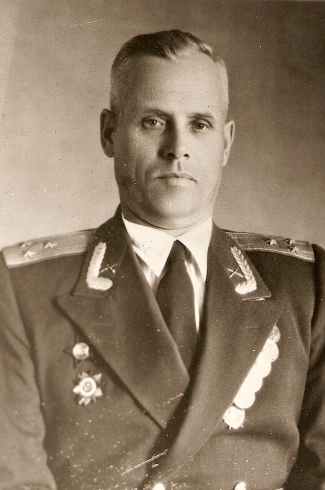

Ширяев Александр Иванович
Родился в 1910 году в д.Ширяево Слободского сельсовета. В 1934 году по комсомольскому набору был направлен в Первое Ленинградское военное артиллерийское училище, которое окончил в 1937 году. С 1941 по 1945 год воевал на фронтах Великой Отечественной войны. Участник Парада Победы на Красной площади 24 июня 1945 года. Награждён орденами Красного Знамени, Отечественной войны 1-й степени, Красной Звезды, многими медалями. После войны остался в Вооружённых Силах СССР и уволился в звании полковника.